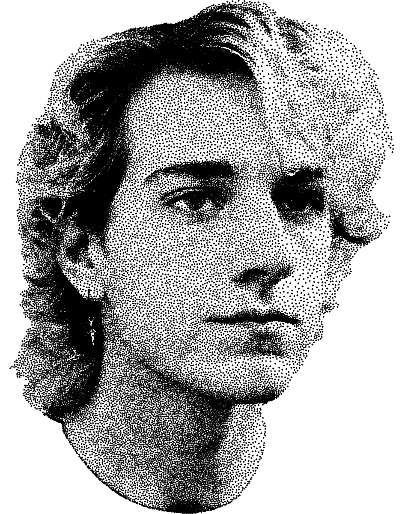

About

Jett Pavlica is a web developer and digital designer who merges deep technical skill with a sharp visual eye. With a background in computer science and years of hands-on experience building custom websites, immersive zines, and digital art, Jett creates online experiences that are both technically sound and creatively unforgettable.
Their work blends clean architecture with expressive design, often featuring animated and interactive elements that capture attention without compromising clarity. Jett collaborates closely with clients, giving artists, individuals, and small businesses a platform to share their identity and connect with patrons on the web.
Rooted in years of experience, a lifelong love of computers, and a creative practice that thrives at the intersection of form and function, Jett offers clients both solid engineering and strong aesthetics: crafted with care, built to resonate.